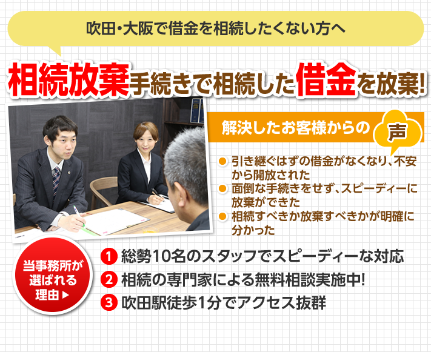

両親が死亡し、相続に伴う不動産の名義変更を自力で行おうと考え法務局のHPを頼りに、必要な情報を少しずつ集めていたが、仕事の忙しさと自身の病気もあり、手続きが送れていた。再度HPを見たその日に新聞のチラシが入り、これは何かの縁だと思い…
相続・遺言トータルサポート大阪TOP ＞ 相続手続きについて ＞ 相続放棄
相続放棄

- 亡くなった家族が借金をしていた…
- 借金を相続したくない…
- 突然、借金の督促状が自分の元に来た…
- 相続放棄は1度きりなので専門家に任せたい
まずは、専門家に無料相談しましょう！相談実績2250件の専門家が ていねいにお話をうかがいます
相続に関する専門家があなたの悩みを解決します。
当センターは遺言・相続についての総合窓口です。相続の事前調査を行い、専門家たち（当センター顧問弁護士・税理士・行政書士・司法書士・社会保険労務士など）がご相談や手続きに応じます。
相続や遺言に関するご相談を一括でできるので、安心です。
- 専門の相談員がどんな小さなご相談にも対応致します。お気軽にご相談ください。
- お電話にてご予約後、事務所またはご自宅にて無料相談させて頂きます。
- 相続に必要な書類を調べ、役所で書類を収集致します。
- これまでのご相談内容と調査結果ともとに、相談診断書と提案書を提示致します。
- 提案書にご満足頂けば正式にご依頼頂き、各種手続きを進めていきます。
たくさんのお客様から感謝の声をいただいております
担当者や職員の態度がよく、早急に手続きを完了することができた (M様・女性)
主人が亡くなり家の名義変更などが他の人からややこしくて大変だと聞いておりました。息子たちに迷惑をかけたくないと思っていました。事務所に何度か伺いましたが担当者以外の職員さんの態度もよかった…
相続人がトラブルなく皆様がなっとくしていただけた (T様・男性)
何をどうして良いか分からず役所にも電話で聞いても自分では無理と思いました。相続人がトラブルなく、皆様がなっとくしていただけた事、竹中先生に感謝します。本当にありがとうございました…
はん雑な手続をやって頂き感謝の気持ちでいっぱいです。(T様・男性)
とにかく相続税がどれ位かかるのか？一般の知り合いに聞いても素人なので控除のことおを知らない人が多く、すごくかかるという人も多いので不安になりました。人によっては家を売って払わないとあかん…
- いきなり依頼するのはちょっと気が引ける…
- 家族や兄弟に相談する前に、相続の大枠について知りたい！
- 専門家に依頼するとどんなメリットがあるか知りたい！
- どのくらいの費用がかかるのか知りたい！
- プロの最適なアドバイスを無料で聞ける
- 親族間で揉めない最適な方法を教えてもらえる
- 依頼した際の費用を確認できる
- 思いもしなかった解決策や選択肢を提案してもらえる
提携専門家・スタッフ紹介
専門家ネットワークによるワンストップ対応
北摂エリア司法書士数No.1!
専門家数が多いため、専門知識豊富でスピーディーにご対応します。
フロアー内には、司法書士、弁護士、税理士、社労士、土地家屋調査士、ＦＰがいるため、 幅広いあらゆるご相談にご対応いたします。

すでに3ヶ月の期限を過ぎた方
すでに3ヶ月の期限を過ぎている方も
あきらめないでください!
３ヶ月の期限を越えた相続放棄申述を行う場合には、通常の相続放棄（３ヶ月期限内）申述の何倍も難しい作業となり、相続放棄に関する豊富な知識が必要になります。
当事務所では、３ヶ月を過ぎた相続放棄にも積極的に取り組んでおり、相続放棄の豊富な解決実績がありますので、安心してご相談ください。
サポート料金
相続放棄 5万円～
まずはお気軽にお問い合わせ下さい！


{kind=link}
{kind=link}
{kind=link}
{kind=link}